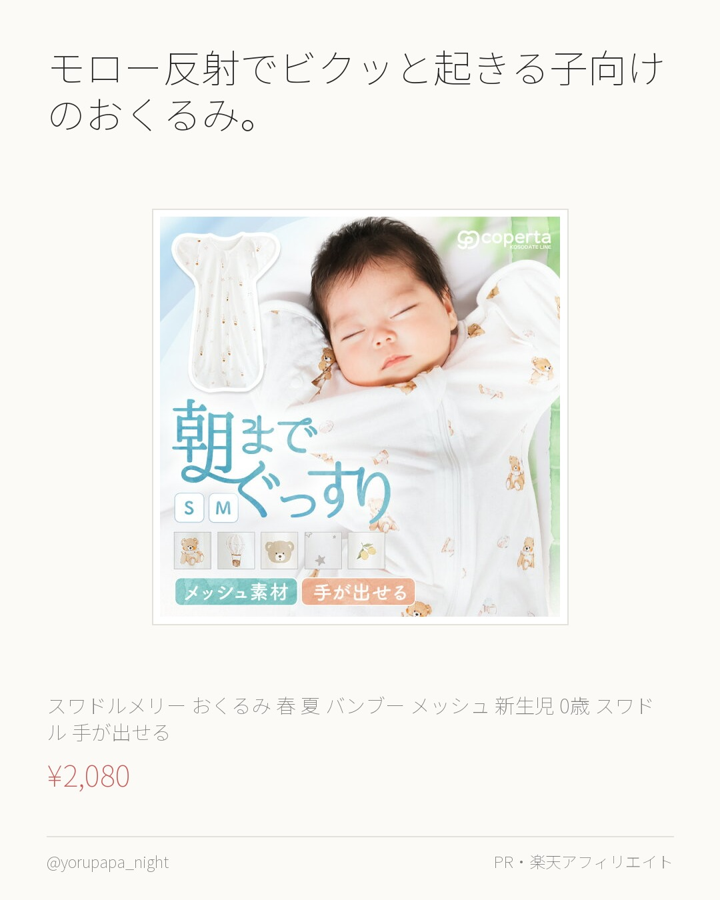
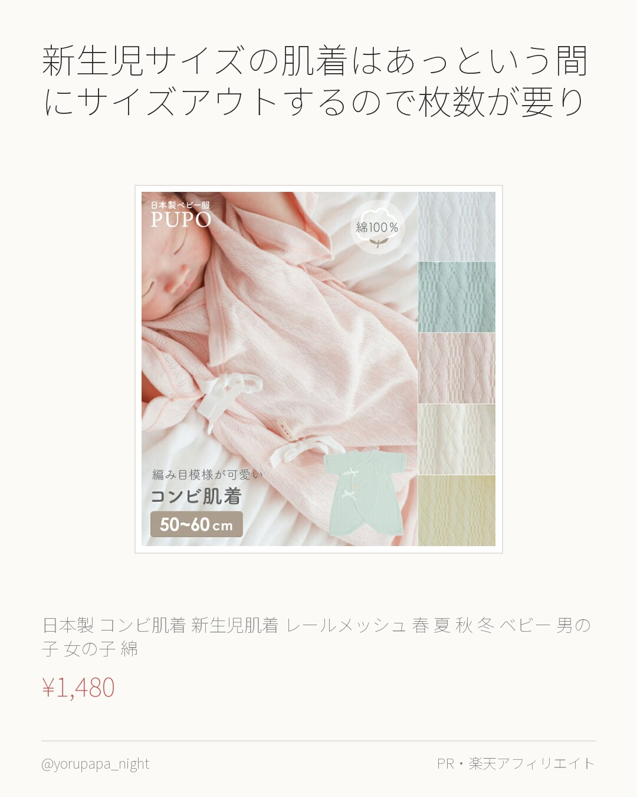
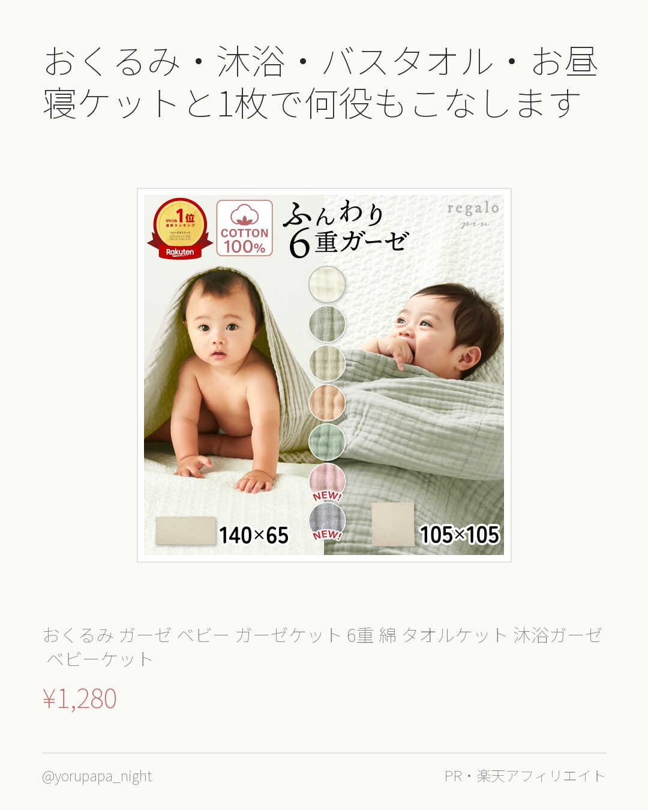
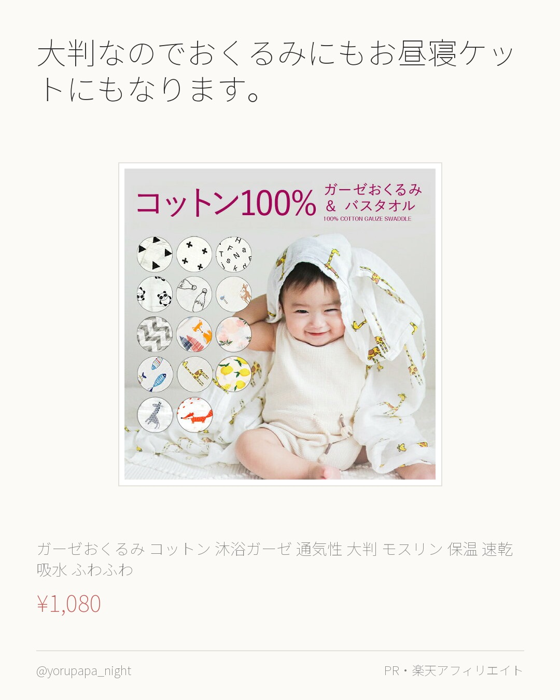
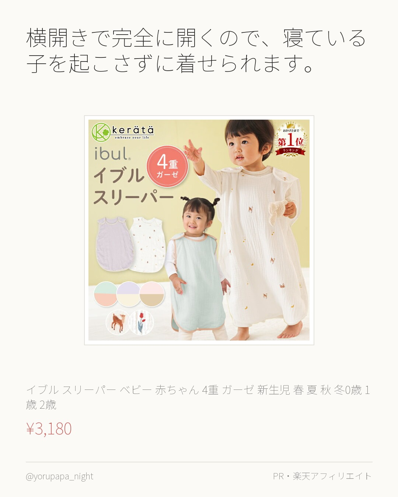
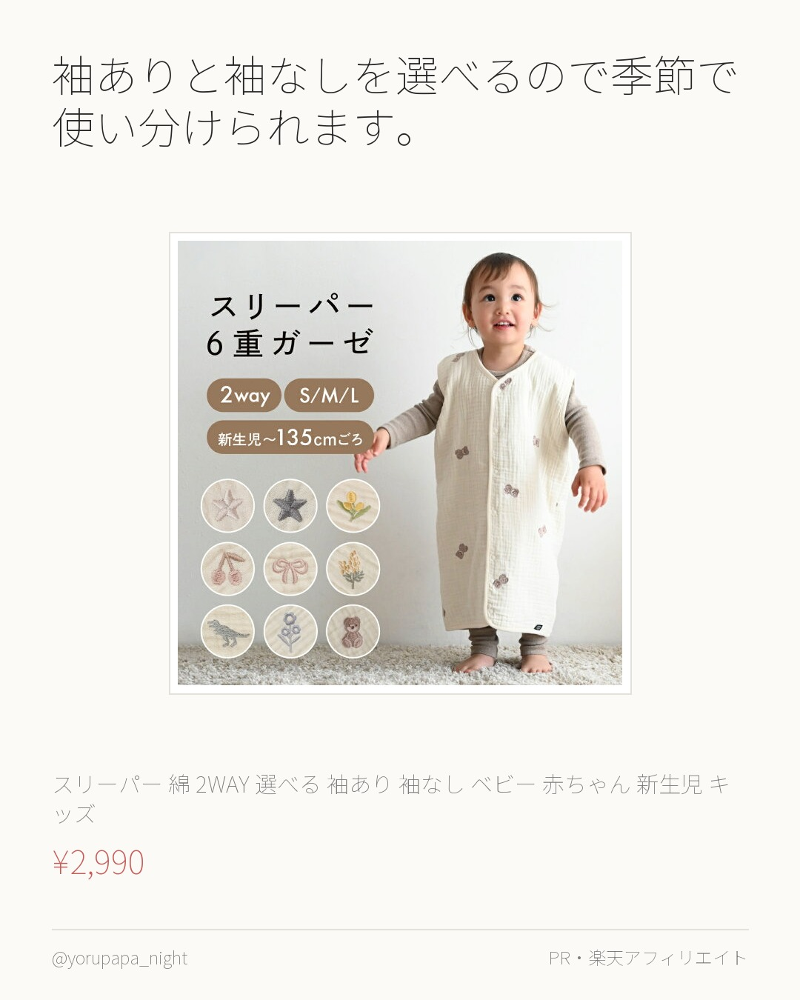
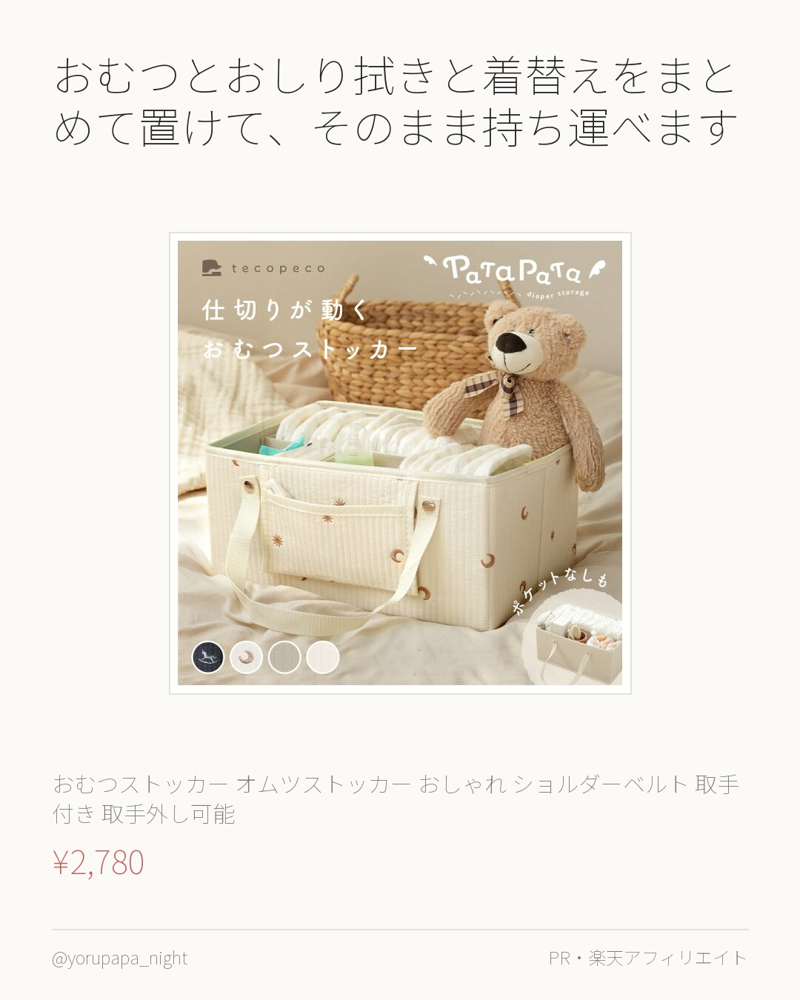
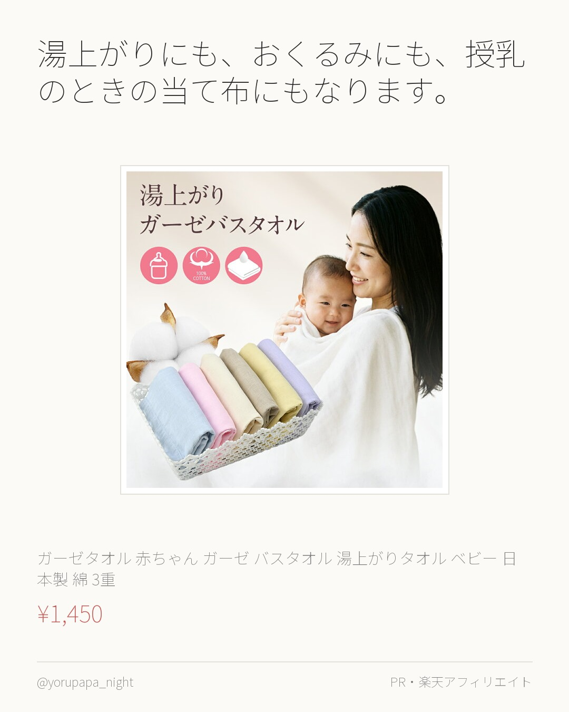

モロー反射でビクッと起きる子向けのおくるみ。手が出せる形なので、指を吸って落ち着くタイプの子でも窮屈になりません。バンブーメッシュで蒸れにくいのもいい。
スワドルメリー おくるみ 春 夏 バンブー メッシュ 新生児 0歳 スワドル 手が出せる 赤ちゃん ベビー モロー反射 サラサラ ムレにくい
¥2,080
楽天市場で見るよるぱぱ｜日中は会社員、夜と休日は育児担当。実際に使ったものだけ。
これまでの投稿をぜんぶ見る → 楽天ROOM／よるぱぱ
モロー反射でビクッと起きる子向けのおくるみ。手が出せる形なので、指を吸って落ち着くタイプの子でも窮屈になりません。バンブーメッシュで蒸れにくいのもいい。
スワドルメリー おくるみ 春 夏 バンブー メッシュ 新生児 0歳 スワドル 手が出せる 赤ちゃん ベビー モロー反射 サラサラ ムレにくい
¥2,080
楽天市場で見る
新生児サイズの肌着はあっという間にサイズアウトするので枚数が要ります。コンビ肌着は股下のスナップで留まるから、足をバタつかせても裾がめくれ上がりません。
日本製 コンビ肌着 新生児肌着 レールメッシュ 春 夏 秋 冬 ベビー 男の子 女の子 綿 コットン 100% ホワイト ピンク グリーン
¥1,480
楽天市場で見る6重ガーゼは洗うほど柔らかくなります。ハーフサイズなのでベビーベッドにもベビーカーにも掛けやすい。夏は1枚、寒くなったら重ねて、と通年で出番があります。
はぐまむ ガーゼケット 6重 ベビー ハーフ 春 夏 秋 タオルケット ブランケット 新生児 赤ちゃん キッズ 子供 出産祝い おくるみ 保
¥2,400
楽天市場で見る
おくるみ・沐浴・バスタオル・お昼寝ケットと1枚で何役もこなします。吐き戻しで洗う回数が多い時期なので、同じものを数枚持っておくと洗濯が回ります。
おくるみ ガーゼ ベビー ガーゼケット 6重 綿100% タオルケット 沐浴ガーゼ ベビーケット おくるみガーゼ 夏用 バスタオル 新生児
¥1,280
楽天市場で見る
大判なのでおくるみにもお昼寝ケットにもなります。モスリンガーゼは速乾なので、1日に何度も洗うこの時期に向いています。使うほど柔らかくなるタイプ。
【楽天3冠/累計3万枚突破】 ガーゼおくるみ コットン100% 沐浴ガーゼ 通気性 大判 モスリン 保温 速乾 吸水 ふわふわ コットン ガ
¥1,080
楽天市場で見る
横開きで完全に開くので、寝ている子を起こさずに着せられます。背中スイッチが怖い時期にこれは大きい。4重ガーゼで季節を選ばず使えます。
【楽天1位】(ケラッタ) イブル スリーパー ベビー 赤ちゃん 4重 ガーゼ 新生児 春 夏 秋 冬0歳 1歳 2歳 3歳 4歳 出産祝い
¥3,180
楽天市場で見る
袖ありと袖なしを選べるので季節で使い分けられます。6重ガーゼは厚みがあるのに通気するので、布団を蹴ってしまう子でも冷えにくい。
スリーパー 【6重ガーゼ】 綿100% 2WAY 選べる 袖あり 袖なし ベビー 赤ちゃん 新生児 キッズ パジャマ 春 夏 秋 冬 ガーゼ
¥2,990
楽天市場で見る
おむつとおしり拭きと着替えをまとめて置けて、そのまま持ち運べます。夜中にリビングと寝室を行き来するとき、これごと移動できるのが楽。取手は外せます。
＼楽天1位★新柄登場／おむつストッカー オムツストッカー おしゃれ ショルダーベルト 取手付き 取手外し可能 仕切り ポケット付き おむつ入
¥2,780
楽天市場で見る
湯上がりにも、おくるみにも、授乳のときの当て布にもなります。3重ガーゼは吸水しながら乾きが早いので、1日に何度も使う新生児期に向いています。
【3枚購入で1枚プレゼント！】ガーゼタオル 赤ちゃん ガーゼ バスタオル 湯上がりタオル ベビー バスタオル 日本製 綿100% 3重 送料
¥1,450
楽天市場で見る